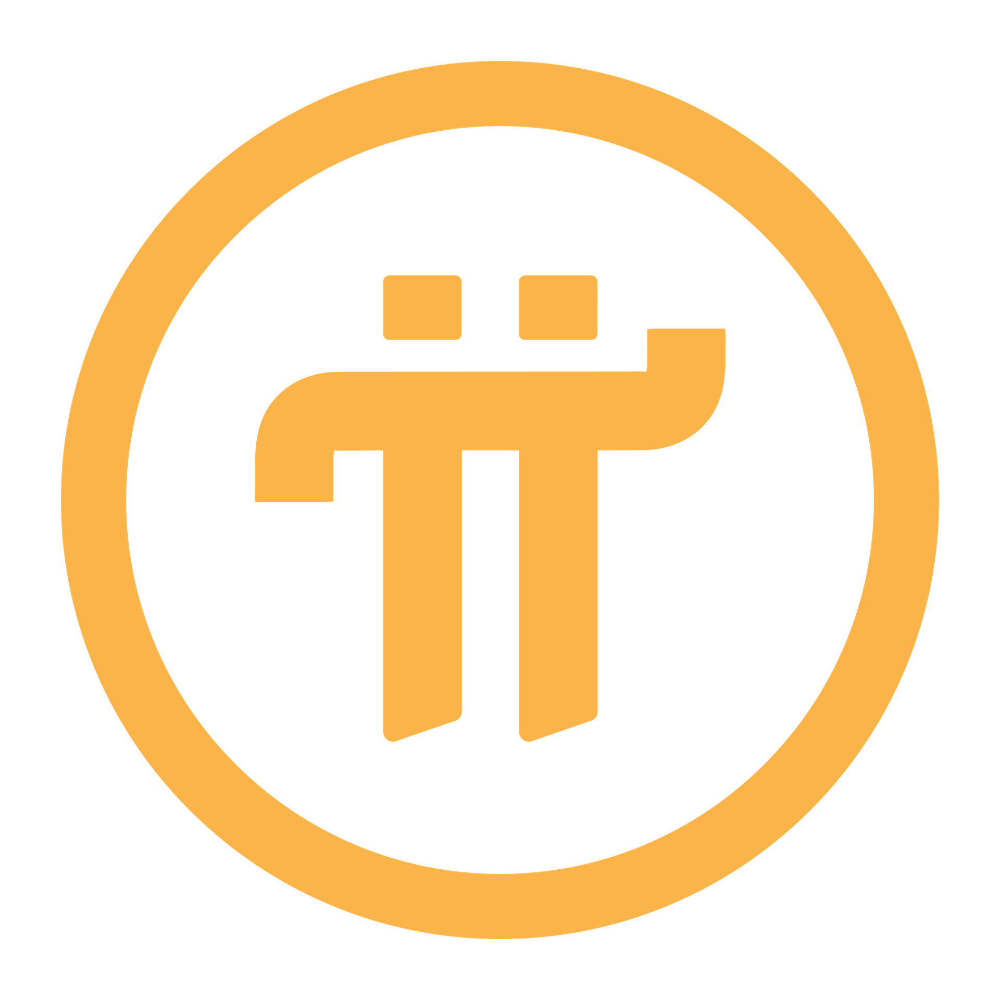

Pi INU is a meme-inspired crypto project launched in November 2021, rooted in the global Pi Network community and driven by strong and sustained interest from users worldwide.
While Pi INU operates independently from the Pi Core Team and follows a different strategic direction, both share the broader Pioneer ecosystem. Each continues to evolve on its own path, yet remains connected through a common community foundation.
Looking ahead, Pi INU and Pi Network may stand as constructive competitors or potential collaborators, continuing to shape the ecosystem together over time.
As a long-term crypto project, Pi INU has explored a wide range of ecosystem developments. Through continuous iteration and real-world experience, the project has built strong operational expertise and achieved meaningful technical progress.
Key Ecosystem Components:
DEX & CEX Listings
Mining Application (Pi INU Mining)
Blockchain Games (CryptoCube, CryptoWheel)
Cross-chain Swap System
NFT & Staking Services
Pi INU has been featured in global media including Benzinga, Coinreaders, Coinpost, BSCN, and Newsway, and has collaborated with IoTeX Korea, Pi Store Korea, and TELTLK.
The project has completed smart contract audits for both PINU and PINU100X, is listed on CoinMarketCap and Trust Wallet, and operates under a registered LLC in New Mexico, USA.
The community continues to grow across multiple platforms including X, Instagram, Telegram, YouTube, TikTok, Kakao, Discord, and Facebook.
Previously Listed Exchanges:
Decoin, Dsdaq, Vindax, Azbit, Coinsbit, P2B, Bifinance, PointPay, Top.one
The original Pi Network meme token since 2021
Built on Binance Smart Chain (BSC), PINU focuses on accessibility, liquidity, and global community expansion.
Multi-exchange listed with strong early traction in global markets.
Contract Address : 0xF03E02AcbC5eb22de027eA4F59235966F5810D4f
Next-generation Pi INU 2.0 launched in 2024
Built on Polygon for scalability, speed, and low transaction costs.
Designed for cross-chain expansion and advanced ecosystem integration.
Contract Address : 0x52Cf3F18eFf5DBC4522af8A51527AB0b64c18d9D
Pi Store Korea Collaboration